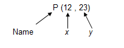

Coordinates of a point
A pair of numbers defining the position of a
point
on a two-dimensional
plane
.
Try this
Drag the point A. As you drag note the two numbers that define its position on the plane.
The coordinates of a
point
are a pair of numbers that define its exact location on a two-dimensional
plane.
Recall that the
coordinate plane
has two axes at right angles to each other, called the x and y axis.
The coordinates of a given point represent how far along each axis the point is located.
Ordered Pair
The coordinates are written as an "ordered pair" as shown below.
The letter P is simply the name of the point and is used to distinguish it from others.

The two numbers in parentheses are the x and y coordinate of the point.
The first number (x) specifies how far along the x (horizontal) axis the point is.
The second is the y coordinate and specifies how far up or down the y axis to go.
It is called an ordered pair because the order of the two numbers matters - the first is always the x (horizontal) coordinate.
The sign of the coordinate is important. A positive number means to go to the right (x) or up(y).
Negative numbers mean to go left (x) or down (y).
(The figure at the top of the page has the values of the axes labelled with the appropriate sign).
Abscissa
The abscissa is another name for the x (horizontal) coordinate of a point. Pronounced "ab-SISS-ah" (the 'c;' is silent).
Not used very much. Most commonly, the term "x-coordinate" is used.
Ordinate
The ordinate is another name for the y (vertical) coordinate of a point. Pronounced "ORD-inet".
Not used very much. Most commonly, the term "y-coordinate" is used.
Things to try
In the figure at the top of the page, first press 'reset'.
If you prefer it, you can drag the origin into any corner to display just one quadrant.
- The point A is in the top right quadrant (first quadrant). Note how both x and y coordinates are positive because
the point is up and to the right of the origin.
- Drag the point into the top left quadrant (second quadrant).
Note now that the x-coordinate is negative because it is to the left of the origin, where x values are negative.
- Drag the point to the lower right quadrant (fourth quadrant). The x-coordinate is positive again because it is to the right of the origin, but now the y coordinate is negative, due to it being below the origin.
Other Coordinate Geometry topics
(C) 2011 Copyright Math Open Reference.
All rights reserved